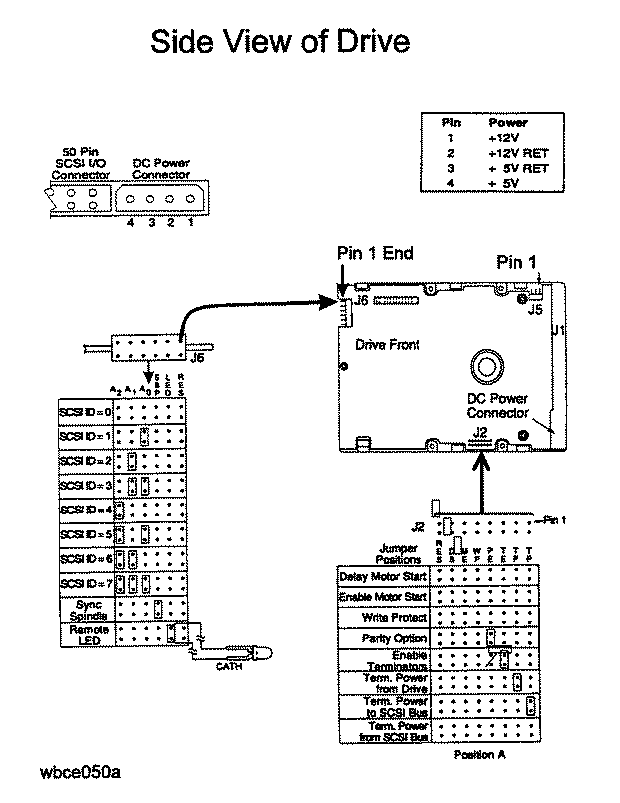

Caution
A3182A represents two intechangeable 1 GB low profile disk drives:
These drives are fixed, sealed hard drives intended for primary mass storage applications. These drives are SCSI-2 compliant single-ended devices with embedded controllers. The drives are functional and replacement equals. The information provided below references manufacturing product number ST31200N.
A3182A Hard Disk Drive (Vendor Product# ST31200N)
The drive options are selected on J2. The drive SCSI ID (address) is set on either J5 or J6 (see following Figure). Table 1 shows the pin-sets for the options available with the A3182A 3.5-inch hard disk drive. The actual settings depend upon the system in which the disk drive is installed and ist location within that system.
Table 2 provides a functional description of the J2 jumpers.
A pin-set is either shorted (with jumper installed) or open (without a jumper). The J5 and J6 option settings are shown on the following Figure.
| Function | Connector | Pin-Set |
| Term Power from SCSI bus | J2 | 2-4* |
| Term Power to SCSI bus | J2 | 1-2 |
| Term Power from Drive | J2 | 3-4 |
| Enable Terminators (TE) | J2 | 5-6 |
| Parity (PE) | J2 | 7-8 |
| Write Protect (WP) | J2 | 9-10 |
| Motor Enable (ME) | J2 | 11-12 |
| Delay Start (DS) | J2 | 13-14 |
| SCSI ID 0 | J6 | 7-8 |
| SCSI ID 1 | J6 | 9-10 |
| SCSI ID 2 | J6 | 11-12 |
| Sync Spindle | J6 | Pin 5 - GND |
| Syns Spindle | J6 | Pin 6 - REFIND+ |
| Remote LED | J6 | Pin 3 - Anode |
| Remote LED | J6 | Pin 4 - Cathode |
Table 1: Option Jumpers for A3182A (ST31200N) 3.5-inch Hard Disk Drive
Note
On the J6 connector:

Figure ST31200N: Single-Ended Hard Disk Drive Option Select Connectors
| Jumper | Jumper | Jumper Function Description |
| TP (Pins 3-4) | TP (Pins 1-2) | |
| Off | Off | No terminator power is connected to drive terminators or SCSI bus I/O pin 26. |
| On | Off | Drive supplies its own terminator power only. |
| Off | On | Drive supplies power to I/O pin 26 of SCSI bus, none to internal terminators. |
| On | On | Drive supplies terminator power to itself (internal connection) and to I/O pin 26 of SCSI bus. |
| TP Position A | TP Position A | |
| Not Used | This horizontally positioned jumper across the two TP positions nearest the PCB edge connects terminator power from SCSI bus I/O pin 26 to the drive's internal terminators. (For single-ended only.) Set if it is the last device on the bus. | |
| TE | TE | |
| On | With the jumper installed, the on-board (non-removeable) terminator circuits are enabled (connected to I/O lines). | |
| Off | Terminator circuits not connected to I/O lines. | |
| PE | PE | |
| On | Parity checking and parity error reporting by the drive is enabled. | |
| Off | Drive does not report result of parity checking to host. | |
| WP | WP | |
| On | Entire drive is write protected. | |
| Off | Drive is not write protected. | |
| DS | ME | |
| Off | Off | Spindle starts immediately after power up. |
| Off | On | Drive spindle does not start until Start unit command is received from host. |
| On | Off | Spindle Startup is delayed by SCSI ID times 12 seconds after power is applied, i.e. drive 0 spindle starts immediately when DC power is connected, drive 1 starts after 12-second delay, drive 2 after 24-second delay. |
| On | On | Drive spindle starts when Start Unit command is received from the ME jumper is installed. |
| RES | RES | |
| Off | Reserved |
Table 2:Jumper Function Description